The first part of the new overview document is now built into this page as web content: why the project began, why Songmen matters, what happened during the three-day programme, and what changed for the students.
From the first 2025 report to the next phase in 2026.
This section brings the project into the website itself: the 2025 page now shares the background, setting, activities, and outcomes of the first programme, while the 2026 page introduces the next stage of development and long-term planning.
The second part of the document is now placed here as website content, focusing on the next phase: deeper continuity, extracurricular expansion, a structured well-being curriculum, media storytelling, and a more sustainable 2026 model.
Photos, charts, and evidence from the PDF
The visual material below is pulled into the page so the report does not feel empty: school context, fieldwork photos, survey evidence, and planning tables are all visible directly inside Project Overview.
1. Context and Place
These visuals situate the project within the unequal educational landscape described in the 2025 report, from the contrast between school environments to the local realities of Songmen and Wenling.
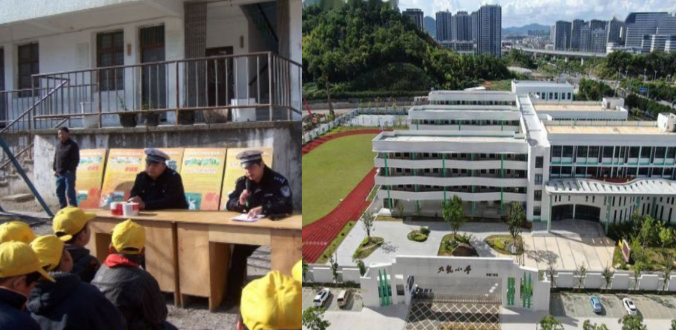
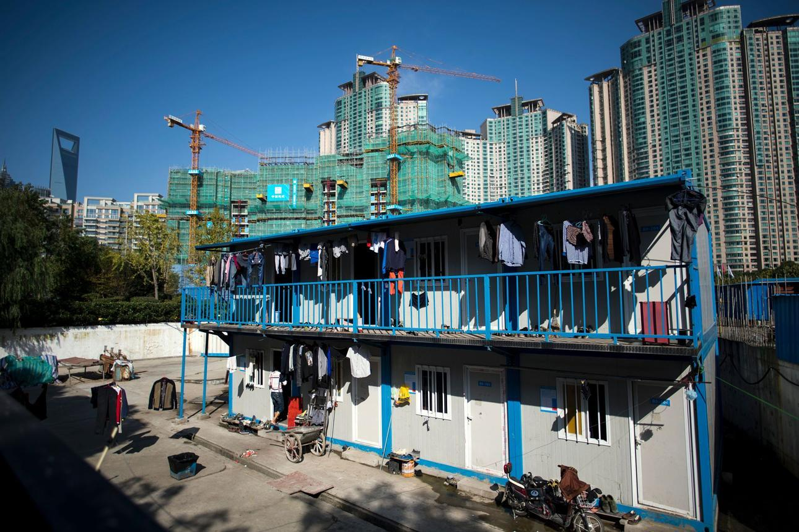
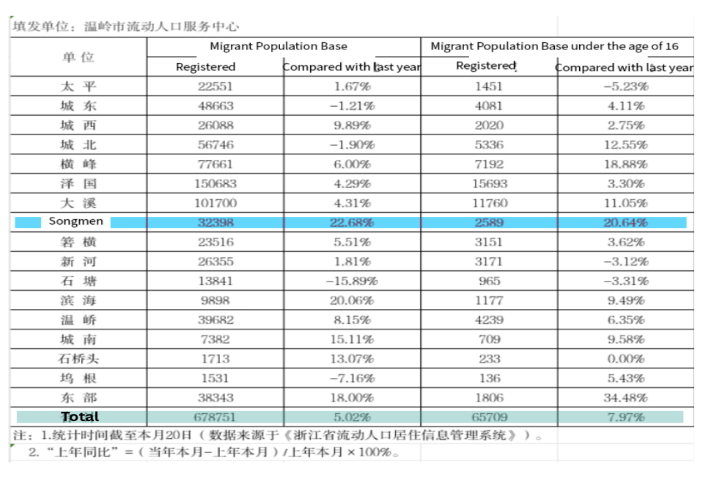
2. Fieldwork and Student Voice
The report is grounded in interviews and student-facing research, not only reflection. These images show the fieldwork process and the materials used to gather student responses.
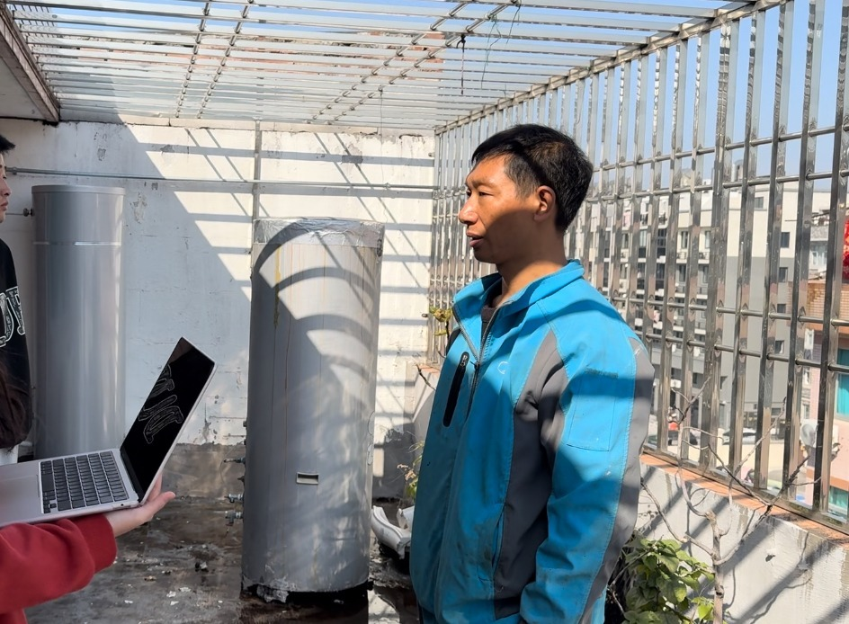
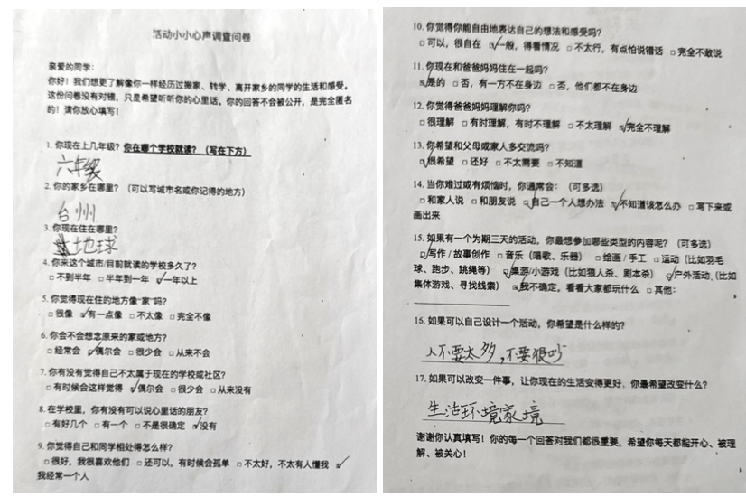
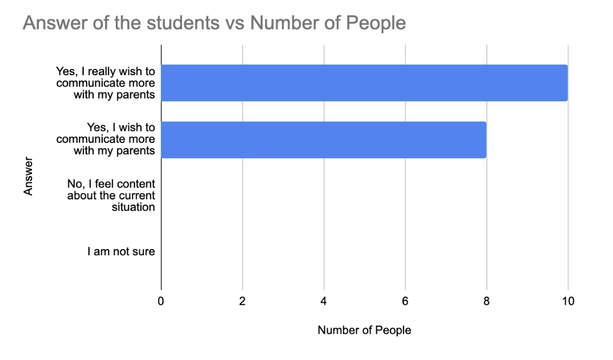
3. Charts from the Survey Findings
The PDF includes quantitative snapshots alongside the narrative. These charts make the report's claims more concrete by showing what students said about family pressure, communication, and emotional experience.
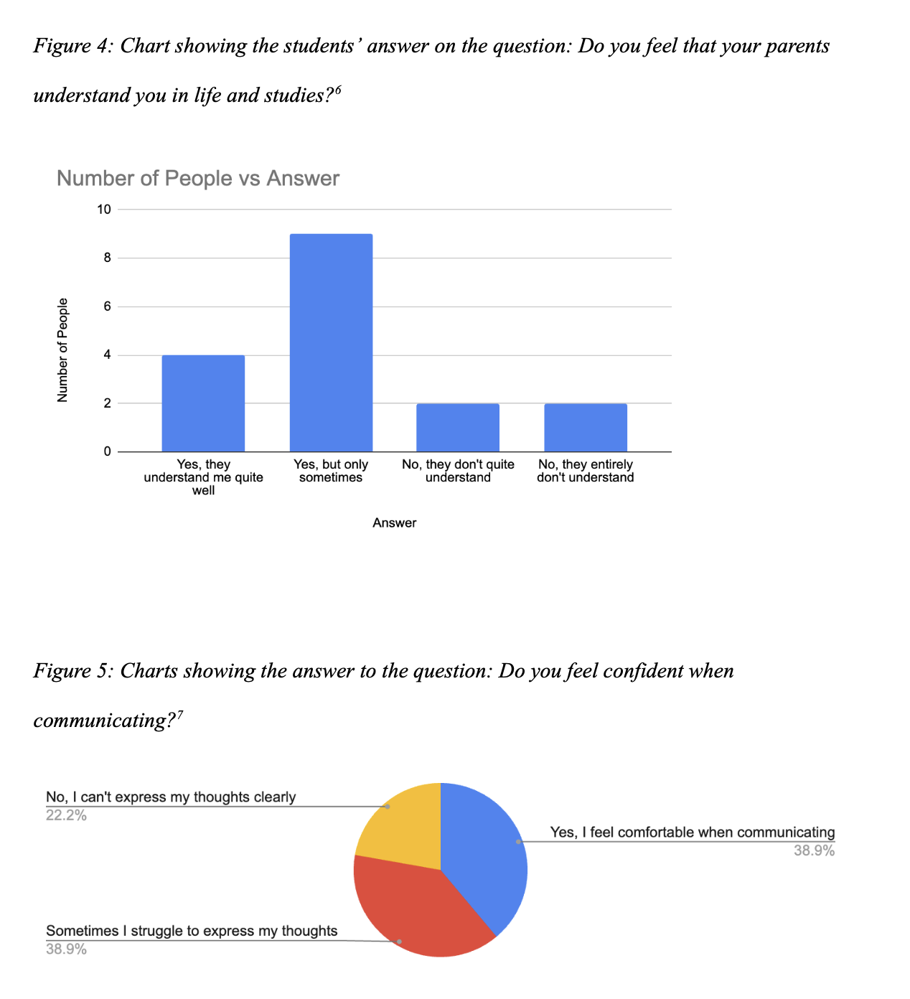
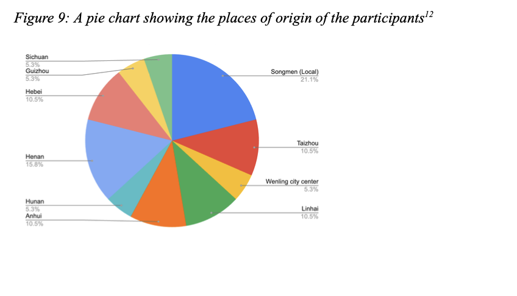
4. Programme Structure and Next-Step Planning
The later pages of the PDF also include planning tables and structured next-step material. Bringing them into the page makes the transition from the 2025 intervention to the 2026 model clearer and more tangible.
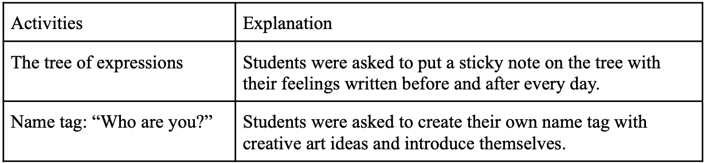
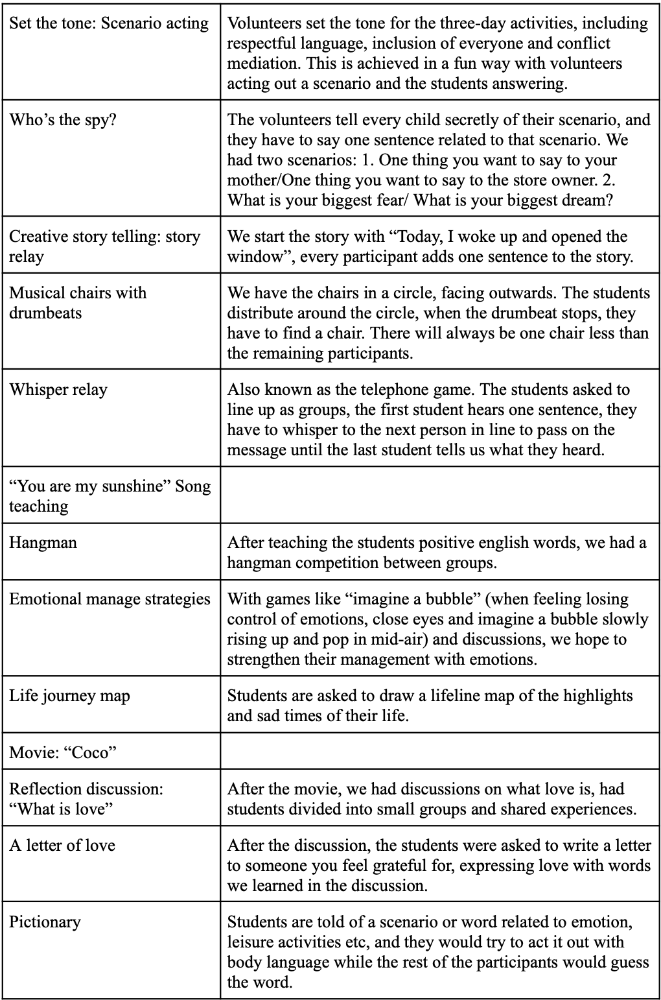
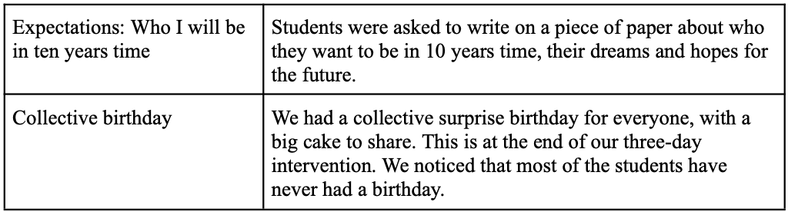